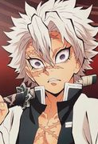

Selecione um personagem
- 

Inosuke
A Respiração da Besta é um estilo criado por Inosuke Hashibira. Ele vivia nas montanas e após precisar lutar por sua sobrevivência, desenvolveu essa técnica de forma autônoma e pessoal.
A Respiração da Besta é um estilo criado por Inosuke Hashibira. Ele vivia nas montanas e após precisar lutar por sua sobrevivência, desenvolveu essa técnica de forma autônoma e pessoal.